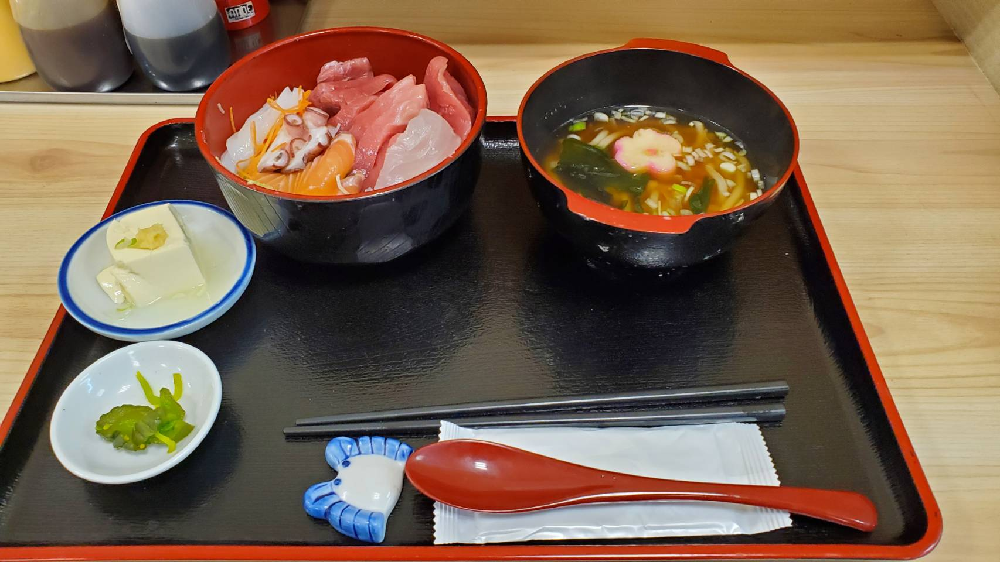

ホームページ

音声操作

創作

お知らせ


【EXVSOB】機動戦士ガンダム エクストリームバーサス2 オーバーブースト ストライクノワール
【EXVSOB】機動戦士ガンダム エクストリームバーサス2 オーバーブースト ストライクノワール

【Yostar】 ブルーアーカイブ総力戦
【Yostar】 ブルーアーカイブ総力戦

Elden_Ring ゲームプレイ動画
Elden_Ring ゲームプレイ動画

Apex legends
Apex legends

海老丸らーめん 東京都千代田区西神田2-1-13 十勝ビル1F
海老丸らーめん 東京都千代田区西神田2-1-13 十勝ビル1F

春駒 大阪府大阪市北区天神橋5-5-2
春駒 大阪府大阪市北区天神橋5-5-2

東京都江戸川区清新町1-3-6 マルエツ葛西クリーンタウン店 1F
東京都江戸川区清新町1-3-6 マルエツ葛西クリーンタウン店 1F

立川四つ角飯店 東京都立川市曙町1丁目16-5
立川四つ角飯店 東京都立川市曙町1丁目16-5